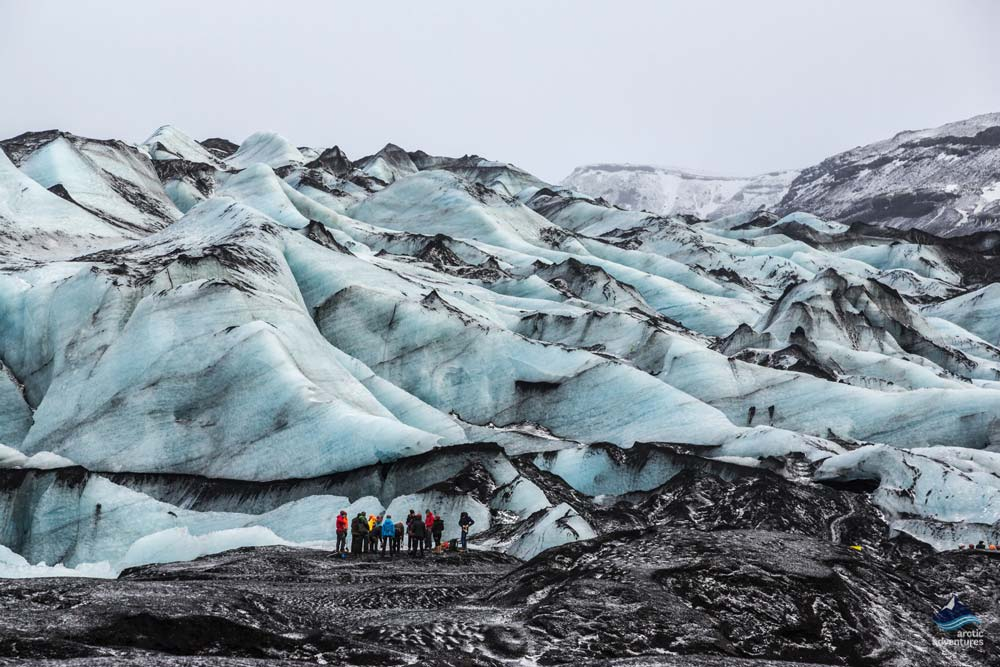
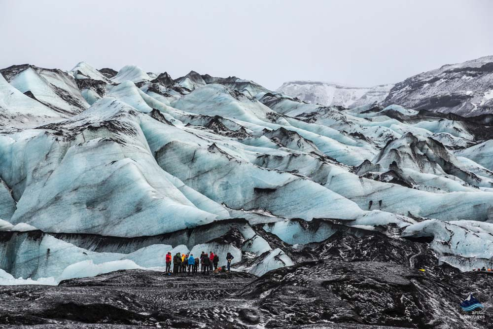

Glacier Experience is a small group experience that offers an easy glacier hike on Sólheimajökull glacier with an experienced glacier guide and is available all year around. The tour offers a pick-up from Reykjavík or a meet on location at Sólheimajökull glacier. Add even more adventure to your stay in Iceland and come explore this amazing crawling glacier with us.
 
